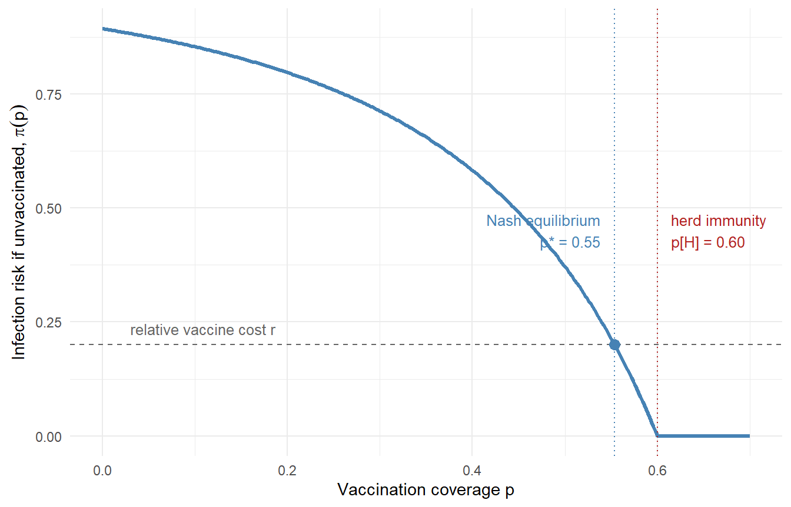
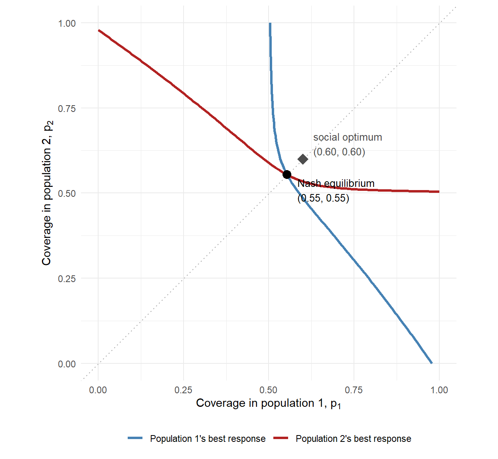

From a 2×2 payoff table to voluntary vaccination in two coupled populations — why neither individuals nor neighboring jurisdictions vaccinate enough on their own.
game theory
Nash equilibrium
vaccination
epidemiology
R
Author
Jong-Hoon Kim
Published
September 3, 2026
1 Why this matters
Vaccination coverage is not a parameter we set; it is the aggregate outcome of many decisions, each made by an agent who responds to what everyone else is doing. The mathematical object that describes where such mutually-responsive decisions settle is the Nash equilibrium(1). For a single well-mixed population, Bauch and Earn showed that voluntary vaccination settles at a Nash equilibrium strictly below the herd-immunity threshold (2) — a point epidemiologists had raised well before game theory entered the field (3). I worked through that single-population game in an earlier post.
This post starts one step earlier — what a Nash equilibrium actually is, using nothing more than a 2×2 table — and then goes one step further: what happens when there are two populations coupled by travel or shared borders, each choosing its own coverage. This is the setting that matters for real vaccination strategy: districts within a country, or neighboring countries deciding on cholera or typhoid vaccination campaigns whose benefits spill across the border (4). The punchline is that the free-rider problem operates at two levels at once: individuals free-ride on their neighbors, and populations free-ride on each other.
2 A Nash equilibrium in one table
Strip away everything continuous. Two neighboring health departments, A and B, each face one binary choice: fund a vaccination Campaign (C) or Not (N). A campaign costs 4 (in some currency of budget units). Epidemic costs depend on what both do, because transmission crosses the border:
If both run campaigns, the outbreak is suppressed: no epidemic cost.
If one runs a campaign, transmission is reduced everywhere, but incompletely: each department suffers epidemic cost 3.
If neither runs one, each suffers epidemic cost 8.
Each department pays its own campaign cost plus its own epidemic cost. Writing total costs as (A’s cost, B’s cost):
B: Campaign
B: No campaign
A: Campaign
(4, 4)
(7, 3)
A: No campaign
(3, 7)
(8, 8)
A best response is the cheapest choice given what the other player does. Check A’s best responses:
If B campaigns, A pays 4 by campaigning or 3 by abstaining → best response: N. A free-rides on B’s spillover protection.
If B abstains, A pays 7 by campaigning or 8 by abstaining → best response: C. Facing an unchecked epidemic, even a solo campaign pays for itself.
A Nash equilibrium is a pair of choices in which each player is best-responding to the other — so no one can gain by unilaterally switching. Here there are two pure-strategy equilibria: (C, N) and (N, C). In each, exactly one department pays for a campaign and the other free-rides, and neither can do better by changing only its own choice. (There is also a mixed equilibrium in which each campaigns with probability 1/2 — Nash’s theorem guarantees at least one equilibrium always exists once mixing is allowed (1).)
Notice what is not an equilibrium: (C, C), the outcome with the lowest total cost (8, versus 10 in either free-rider equilibrium and 16 with no campaigns). The socially best outcome is unstable because each player, holding the other’s choice fixed, gains by defecting. That divergence between equilibrium and optimum is the entire story of vaccination games; the rest of this post just replaces the 2×2 table with epidemic dynamics.
3 One population, continuous strategies
Now let the strategy be continuous: each individual in a large well-mixed population decides whether to vaccinate before an epidemic, and the population-level outcome is a coverage \(p \in [0,1]\). Let \(r\) be the cost of vaccination relative to the cost of infection (so \(0 < r < 1\)), and let \(\pi(p)\) be the probability that an unvaccinated individual is eventually infected when coverage is \(p\).
For an SIR-type epidemic with a perfect vaccine, \(\pi(p)\) is the final size among the unvaccinated, which solves
\[
\pi = 1 - \exp\{-R_0\,(1-p)\,\pi\},
\]
and \(\pi(p) = 0\) once \(p\) exceeds the herd-immunity threshold \(p_H = 1 - 1/R_0\).
The logic of the 2×2 table carries over directly. If \(\pi(p) > r\), an unvaccinated individual gains by vaccinating, so coverage rises; if \(\pi(p) < r\), a vaccinated individual would have preferred not to, so coverage falls. The interior Nash equilibrium \(p^*\) is the indifference point(2):
\[
\pi(p^*) = r.
\]
Since \(r > 0\) requires \(\pi(p^*) > 0\), the equilibrium always sits below\(p_H\): voluntary vaccination never reaches herd immunity.
library(ggplot2)# Final size among the unvaccinated at coverage p (perfect vaccine)attack_rate <-function(p, R0) { R_eff <- R0 * (1- p)if (R_eff <=1) return(0)uniroot(function(z) z - (1-exp(-R_eff * z)),interval =c(1e-9, 1), tol =1e-12)$root}R0 <-2.5# e.g., a moderately transmissible respiratory pathogenr <-0.2# vaccination cost relative to infection costp_H <-1-1/ R0p_nash <-uniroot(function(p) attack_rate(p, R0) - r,interval =c(0, p_H -1e-6))$rootround(c(nash = p_nash, herd_immunity = p_H), 3)
nash herd_immunity
0.554 0.600
With \(R_0 = 2.5\) and \(r = 0.2\), voluntary coverage settles at 0.554 — below the herd-immunity threshold of 0.6, and stably so: any campaign that pushes coverage above \(p^*\) lowers the infection risk below \(r\), and the incentive to vaccinate evaporates.
p_grid <-seq(0, 0.7, by =0.002)df <-data.frame(p = p_grid,risk =sapply(p_grid, attack_rate, R0 = R0))ggplot(df, aes(p, risk)) +geom_line(color ="steelblue", linewidth =1.1) +geom_hline(yintercept = r, linetype ="dashed", color ="grey40") +geom_vline(xintercept = p_nash, linetype ="dotted", color ="steelblue") +geom_vline(xintercept = p_H, linetype ="dotted", color ="firebrick") +annotate("point", x = p_nash, y = r, size =3, color ="steelblue") +annotate("text", x = p_nash -0.015, y =0.45,label =sprintf("Nash equilibrium\np* = %.2f", p_nash),hjust =1, size =3.4, color ="steelblue") +annotate("text", x = p_H +0.015, y =0.45,label =sprintf("herd immunity\np[H] = %.2f", p_H),hjust =0, size =3.4, color ="firebrick") +annotate("text", x =0.03, y = r +0.035,label ="relative vaccine cost r", hjust =0,size =3.4, color ="grey40") +labs(x ="Vaccination coverage p",y =expression("Infection risk if unvaccinated, "*pi(p))) +theme_minimal()

Figure 1: Infection risk to an unvaccinated individual as a function of vaccination coverage (\(R_0 = 2.5\)). The Nash equilibrium sits where risk equals the relative cost of vaccination (\(r = 0.2\)), always short of the herd-immunity threshold.
One identity worth noticing: at an interior equilibrium, everyone’s expected cost is exactly \(r\) — vaccinators pay \(r\) by construction, and non-vaccinators face risk \(\pi(p^*) = r\). This will make welfare comparisons easy below.
4 Two coupled populations
Now the setting the title promised. Two populations of equal size (label them 1 and 2), coupled by a next-generation matrix
where \(R_w\) is within-population transmission and \(R_b\) is between-population transmission. Each population independently arrives at its own voluntary coverage \(p_1, p_2\). The final sizes among the unvaccinated now solve a coupled system:
The strategic structure is the same as before, applied within each population: coverage in population \(i\) adjusts until \(\pi_i = r\) (or hits a boundary). But \(\pi_1\) now depends on \(p_2\), and vice versa — which is exactly the condition for the game between populations to have interesting equilibria.
# Coupled final sizes among the unvaccinated, by fixed-point iterationattack_rates2 <-function(p, K, tol =1e-12, max_iter =5000) { z <-c(1, 1)for (i inseq_len(max_iter)) { z_new <-1-exp(-as.vector(K %*% ((1- p) * z)))if (max(abs(z_new - z)) < tol) break z <- z_new } z}# Population i's equilibrium coverage, given the other population's coverage:# raise p_i until the local infection risk falls to r (with boundary cases)best_response <-function(p_other, i, K, r) { f <-function(p_i) { p <-numeric(2); p[i] <- p_i; p[-i] <- p_otherattack_rates2(p, K)[i] - r }if (f(0) <=0) return(0) # risk already below cost: no one vaccinatesif (f(1) >=0) return(1) # spillover risk exceeds cost even at full coverageuniroot(f, c(0, 1), tol =1e-9)$root}# 90% of contacts within, 10% between; rows sum to R0 = 2.5K <-matrix(c(2.25, 0.25,0.25, 2.25), nrow =2, byrow =TRUE)
A Nash equilibrium of the two-population game is a pair \((p_1^*, p_2^*)\) where each coverage is a best response to the other. We can find it by iterating best responses until they stop moving:
The symmetric equilibrium is \((0.554, 0.554)\) — numerically identical to the single-population Nash coverage. That is not a coincidence: on the diagonal \(p_1 = p_2\), the coupling is invisible, because an individual’s total exposure depends only on the row sum \(R_w + R_b = R_0\). The coupling shows its teeth off the diagonal, in the shape of the best-response curves.
grid <-seq(0, 1, by =0.01)br1 <-sapply(grid, best_response, i =1, K = K, r = r) # p1 responding to p2br2 <-sapply(grid, best_response, i =2, K = K, r = r) # p2 responding to p1p_opt <-c(0.6, 0.6) # social optimum, computed in the next sectionggplot() +geom_line(aes(x = br1, y = grid, color ="Population 1's best response"),linewidth =1.1) +geom_line(aes(x = grid, y = br2, color ="Population 2's best response"),linewidth =1.1) +geom_abline(slope =1, intercept =0, linetype ="dotted", color ="grey70") +annotate("point", x = p_nash2[1], y = p_nash2[2], size =3.5) +annotate("text", x = p_nash2[1] +0.03, y = p_nash2[2] -0.045,label ="Nash equilibrium\n(0.55, 0.55)", hjust =0, size =3.4) +annotate("point", x = p_opt[1], y = p_opt[2], shape =18, size =4.5,color ="grey30") +annotate("text", x = p_opt[1] +0.03, y = p_opt[2] +0.045,label ="social optimum\n(0.60, 0.60)", hjust =0, size =3.4,color ="grey30") +scale_color_manual(values =c("Population 1's best response"="steelblue","Population 2's best response"="firebrick"),name =NULL) +coord_equal(xlim =c(0, 1), ylim =c(0, 1)) +labs(x =expression("Coverage in population 1, "* p[1]),y =expression("Coverage in population 2, "* p[2])) +theme_minimal() +theme(legend.position ="bottom")

Figure 2: Best-response curves for the two-population vaccination game (\(R_w = 2.25\), \(R_b = 0.25\), \(r = 0.2\)). Each curve slopes downward — the more your neighbor vaccinates, the less your own population does. The Nash equilibrium (their intersection) lies below the social optimum in both coordinates.
Both curves slope downward: coverages are strategic substitutes. Read population 1’s curve (blue) at two points:
If population 2 is stuck at 30% coverage — supply constraints, hesitancy, a later campaign start — population 1’s voluntary equilibrium rises to 75%, compensating for the imported risk. If population 2 reaches 90%, population 1 relaxes to 51%, free-riding on its neighbor’s effort. Every unit of coverage a neighbor adds is partly absorbed as reduced effort at home. This is the two-population echo of the 2×2 game above: the same incentive that produced the (C, N) equilibrium now bends a whole curve.
4.1 The social optimum, and the price of anarchy
A benevolent planner controlling both populations would minimize total per-capita cost — vaccination costs plus infection costs:
total_cost <-function(p, K, r) { z <-attack_rates2(p, K)mean(r * p + (1- p) * z)}grid_opt <-expand.grid(p1 =seq(0, 1, by =0.005),p2 =seq(0, 1, by =0.005))cost <-mapply(function(a, b) total_cost(c(a, b), K, r), grid_opt$p1, grid_opt$p2)opt <- grid_opt[which.min(cost), ]round(c(p1_opt = opt$p1, p2_opt = opt$p2,cost_optimum =min(cost),cost_nash =total_cost(p_nash2, K, r)), 3)
The planner pushes both populations to the herd-immunity threshold \((0.6, 0.6)\) and eliminates the epidemic, at a per-capita cost of \(0.12\). The Nash equilibrium costs \(0.20\) per capita — recall the identity from the single-population game: at an interior equilibrium, everyone’s expected cost equals \(r\) exactly. The ratio, about 1.7, is the price of anarchy: society pays two-thirds more under decentralized decisions than under coordination, and it pays it in infections rather than in vaccine doses.
Note what the planner’s solution requires: both populations exceed their Nash coverage simultaneously. If only one moves to 0.6 while the other best-responds, the other slides down its curve, and the pair drifts back toward the equilibrium. That is precisely why the Nash equilibrium is the right baseline for policy analysis — it is where the system returns when coordination fails. Klepac and colleagues develop this logic for real cross-border vaccination decisions, asking when regional agreements are self-enforcing, meaning that the agreed coverage is itself a Nash equilibrium of the game between countries (4).
5 Practical takeaway
For a modeler who wants to use this on actual multi-population vaccination questions:
Treat coverage as an equilibrium, not a knob. When uptake is voluntary, the coverage your compartmental model should expect is the solution of \(\pi_i(p) = r_i\), not the target written in the strategy document. The indifference condition converts your existing final-size or transmission machinery directly into a behavioral prediction.
Best-response curves are cheap to compute and very informative. Everything in this post ran on base R plus uniroot and a fixed-point loop. The slope of the curves tells you the direction of the externality: downward-sloping curves mean neighbor effort substitutes for local effort, so a donor-funded campaign in one district partially displaces voluntary uptake next door — an effect worth building into campaign impact estimates.
The gap between Nash and optimum is the case for coordination. The price of anarchy quantifies, in the same cost units as a cost-effectiveness analysis, what regional coordination mechanisms (pooled procurement, synchronized campaigns, cross-border agreements) are worth. And an agreement will only hold if no signatory gains by unilaterally cutting coverage — that is, if the agreement is itself a Nash equilibrium (4).
The model here is deliberately minimal — equal population sizes, a perfect vaccine, symmetric costs, one-shot decisions. Each relaxation (asymmetric sizes, waning, sequential campaigns, more than two populations) changes the numbers but not the method: write down each player’s cost, compute best responses, and find where they intersect.
6 References
1.
Nash JF. Equilibrium points in n-person games. Proceedings of the National Academy of Sciences. 1950;36(1):48–9. doi:10.1073/pnas.36.1.48
2.
Bauch CT, Earn DJD. Vaccination and the theory of games. Proceedings of the National Academy of Sciences. 2004;101(36):13391–4. doi:10.1073/pnas.0403823101
3.
Fine PEM, Clarkson JA. Individual versus public priorities in the determination of optimal vaccination policies. American Journal of Epidemiology. 1986;124(6):1012–20. doi:10.1093/oxfordjournals.aje.a114471
4.
Klepac P, Megiddo I, Grenfell BT, Laxminarayan R. Self-enforcing regional vaccination agreements. Journal of the Royal Society Interface. 2016;13(114):20150907. doi:10.1098/rsif.2015.0907